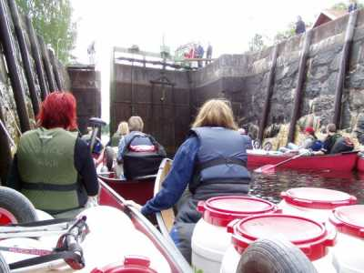
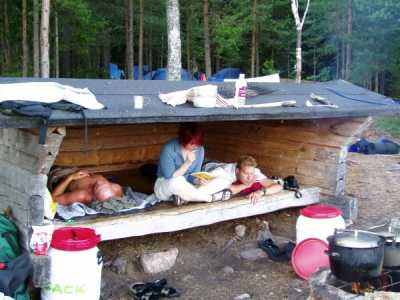

| Home | Kontakt | Steckbrief |
| Wandern/Trekking |
| Klettern/Klettersteige |
| Kanu |
| Fahrradtouren |
|
| Rucksack-Reisen |
| Touren mit Kindern |
| Wissenswertes |
Reisebericht Schweden Dalsland 2003Da ich mal wieder Bock auf Kanuurlaub hatte und ich die Reisphilosophie von Rucksack Reisen schon kennenlernen durfte, hat ich mich 2003 für den 14 tägigen Kanutraum in Dalsland angemeldet. Glücklicherweise habe ich mit meiner Terminwahl auch genau den schwedischen Sommer erwischt. Am Tag unserer Anreise war es regnerisch und den letzten Tag durften wir auch im Regen paddeln. Dazwischen war es nur sonnig und den Regen haben wir auch nicht vermißt, da die Seen auch so voll genug waren.Erst mal ein wenig zur Lage des Gebietes. Das Hauptkanurevier in Dalsland ist der Dalslandkanal. Er liegt nordwestlich des großen Vaenern Sees und südwestlich von Oslo direkt an der Schwedisch-Norwegischen Grenze. Man hat dort mit wenigen Kilometern künstlichen Kanälen zahlreiche Seen zum Holztransport und zum Warenaustausch verbunden. Auf meiner Karte ist dieses Gebiet mit dem Ortsnamen Krokfors gekennzeichnet. In Krokfors befindet sich eine Schleuse, die den Östra Silen mit dem Vestra Silen verbindet. Nahe dieser Schleuse befindet sich heute das Camp von Rucksack-Reisen. 2003 war allerdings noch der Campingplatz in Vammerviken Ausgangspunkt aller Touren. Es empfiehlt sich vor Ort das Buch Kanuland zu erwerben, das es vor Ort in jedem Laden oder Campingplatz in allen wichtigen Sprachen gibt. Neben einigen Informationen und Verhaltensregeln enthält es Karten im Maßstab 1:100000, die für die Navigation ausreichend sind (ISBN 91-972363-3-0). Alle offiziellen Lagerplätze sind dort ebenfalls verzeichnet. Hat man vor längere Touren an Land zu machen, dann empfiehlt sich eventuell weiteres Kartenmaterial. Nach 14 Stunden Busfahrt von Münster über Bremen, Hamburg, Puttgarden Rodby erreichten wir im 4 Uhr morgens den Campingplatz in Vammerviken nahe bei Gustavsfors. Beladen der Materialtonnen in Vammerviken Nach einem "starken" Kaffee gingen wir daran die Materialtonnen und Lebensmitteltonnen zu beladen. Etwa um die Mittagszeit kamen auch unsere Kanus mit den Teilnehmern der Vorwoche an. Etwa gegen 14 Uhr fuhren wir dann nach kurzer Einweisung los. Es ging durch die Schleuse bei Gustavsfors für die man pro Kanu einen kleinen Obolus bezahlen darf. 
Schleusung in Gustavsfors
Von Bengtsfors sind wir dann den Lelang nach Norden gefahren und bei
Krokfors durch die Schleuse Richtung Östra Silen gepaddelt. Dort an der
Schleuse kann man exzellente Räucherfische kaufen, was wir natürlich
nicht lassen konnten.Auf dem Lelang kurz hinter Gustavsfjors haben wir und dann einen Platz für die Zelte gesucht. Leider waren die offiziellen Plätze alle belegt, so dass wir uns am Ufer entlang aufteilen mußten. Abends haben wir dann noch einen kurzen Abstecher zu einer gegenüberliegenden Insel gemacht. Auf dem Lelang Das Wasser auf dem See war dank der Windstille absolut ruhig und wir sind dann nach Sonnenuntergang zum Lager zurückgepaddelt. Am nächsten Tag sind wir den Lelang Richtung Norden gefahren. Pro Tag sind wir so etwa 4 bis 5 Stunden gepaddelt und haben, wo es ging, an den offiziellen Plätzen übernachtet. Die Plätze sind ausgerüstet mit einer fest eingefassten Feuerstelle und einer flachen Holzhütte, in der man auch vorzüglich schlafen konnte. Die Müuuml;cken waren meistens abends für zwei Stunden aktiv und ließen sich mit Autan und Gesichtsnetz ganz gut abwehren. Notwendiger Mückenschutz
Vom Lelang sind wir dann Richtung Nordosten in den Blomsjörna gefahren. Dort war eine der zahlreichen Portagen notwendig. Eigens dafür haben wir für jedes Boot je einen stabilen Kanuwagen mitgenommen. Vollbeladen bergauf. Leer bergab.
Nach dem Blomsjörna sind wir Richtung Norden in den Foxen gefahren. Das Wasser aus dem See schmeckte wahrscheinlich wegen seiner Größe am Besten. Noch ist es dort überall möglich sein Trinkwasser direkt aus den Seen zu schöpfen, da keine Industrie vorhanden ist. Wasserfilter, Chemie oder abkochen ist nicht notwendig. Man sollte nur beachten das Wasser aus der nicht direkt in Ufernähe zu holen und nicht von der Oberfläche abzuschöpfen. Es empfiehlt sich dafür einen größeren Kanister mitzunehmen, damit man nicht ständig hinausfahren muß. Noch klebt der Brotteig etwas Etwa zu dieser Zeit sind uns
die Brotvorräte ausgegangen. Da wir aber genug Mehl und Hefe mit
hatten fingen wir nun selber mit dem Backen an. Der aufgegangene
Hefeteig wurde in einen Trangiatopf gefüllt und in einen mit einem
Schluck Wasser gefüllten Hordentopf gestellt. Unter den Trangiatopf
kamen noch drei Steine und fertig war der Backofen. Da wir zwei
Herdentöpfe mithatten, konnten wir immer zwei Brote gleichzeitig
backen, was nicht schlecht war, da der Backvorgang doch zwei Stunden in
Anspruch nahm.
Der Foxen
Man sollte berücksichtigen das auf den großen Seen je nach Windrichtung und Windstärke enorme Wellen entstehen können, die mühelos ein offenes Kanu zum kentern bringen können. Bei schlechtem Wetter sollte man sich also nicht weiter vom Land entfernen wie man bereit ist zu schwimmen. Vom Foxen sind wir südwestlich in den Stora Le und haben kurz die Grenze nach Norwegen überquert. Dort haben wir dann kehrt gemacht und sind durch die Dreifachschleuse bei Lenartsfors zurück in den Lelang gefahren. Bei Gustavsfors sind wir dann wieder zurück nach Vammerviken gefahren, wo wir auf einer Insel gegenüber des Campingplatzes unser Lager aufgeschlagen haben. Einige sind dann zum Duschen und Müslinachfüllen zum Campingplatz hinübergepaddelt. 
Typischer Windschutz am Lagerplatz
Von dort sind wir dann Richtung Süden durch den landschaftlich schönen Svärdlang Richtung Bengtsfors gefahren. Unterwegs sind wir noch auf den Egersknatten gestiegen, der höchsten Erhebung der Umgebung  Blick vom Egersknatten auf den Lelang
Der Egersknatten ist ein typischer Turnschuhberg, den man vom Wasser aus in 50 Minuten bestiegen hat. In Bengtsfors holt einen die Zivilisation wieder ein. Großes Einkaufszentrum, Bank zur Bargeldauffüllung und Frittenbude. Ein Highlight ist die Süßwarenfabrik am Ortseingang. Im dortigen Werksverkauf haben wir uns einiges an Medizin gegen Unterzuckerung geholt. Fabrikverkauf der Süßwarenfabrik Nach 10 Tagen mal wieder Junk Food (gestellte Aufnahme :-]) Frische Räucherforelle
Der nächste Tag war als Ruhetag eingeplant. Man konnte entweder am Lager bleiben oder Touren in die Umgebung machen. Wir entschieden uns mit leichtem Gepäck und drei Leuten pro Kanu den Oestra Silen hinunter zu fahren. Bei der Rückfahrt wurden wir dann von einem Sommergewitter überrascht. Ist schon ein merkwürdiges Gefühl bei Gewitter im Kanadier zu hocken. Wir fuhren dicht an Land entlang, um nicht den höchsten Punkt in der Umgebung zu bilden und kamen nachmittags wieder sicher im Lager an. Der nächste Tag fing mit Regen an, der erst am späten Nachmittag aufhörte. Die Schleuse haben wir umtragen und sind dann im Regen den Vaestra Silen hinauf bis zur Insel vor Vammerviken gepaddelt. Endlich mal wieder Regen
Am nächsten Morgen sind wir nur noch rüber zum Campingplatz gepaddelt, haben das Material an die nächste Gruppe übergeben und nach einem Abschieds-Grill-Fest sind wir mit dem Bus zurück nach Deutschland gefahren. Etwa um 12:00Uhr waren wir wieder in Münster. Alle Fotos stammen von den digitalkamerabestückten Teilnehmern.
Streckenliste und angefahrene BiwakplätzeDie Nummern bei den Biwakplätzen geben die Nummern im Kanuland Buch wieder.
Informationen: Luftbild der Region |
{kind=link}
{kind=link}